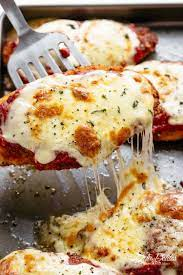

Cheesy Chicken!

Crispy chicken with melted cheese!
A piece of fried chicken as cheesy as you can get it!
It goes great with pasta, or as the perfect entree.
Ingredients
- "Cleaned" chicken breast
- 2 eggs
- Seasoned flour
- Buttermilk
- Cornflakes
- Cream cheese
- Your favorite kind of cheese
- Optinal: A nice bed of pasta!
Tools
- Frying mechanism. Be it a pan with oil or a fryer. A fryer works best.
- Oven set to 350-400 degrees.
Steps
- Preheat oven, and turn on fryer to 350 degrees.
- mix both eggs and a quarter cup of buttermilk together,to an even consistency throughout.
- set up a breading station with 3 bowls of ingredients in this order. Flour. Egg Buttermilk mix. Cornflakes.
- Coat chicken in flour.
- Coat floured chicken in egg buttermilk mix, then immediately cornflakes.
- Make sure its evenly and throughly coated
- Put into the fryer. Note that cook times will vary depending on how big the chicken breast is, and how much coating was put on.
- To ensure proper cooking, cut into the breast. If there is any sign it is undercooked, it needs to be fried for longer.
- When the chicken is cooked throughly. Spread a layer of cream cheese over the top. Put as much as you want!
- Put your favorite cheese on top! Again as much as you want.
- Put the cooked and cheesed chicken in the over. Cook times will vary based on how much cheese was put on.
- When the cheese is bubbly and brown on top take it out.
- Make sure the oven and fryer are turned off!
- Serve over a bed of your favorite pasta, or with anything.
- Enjoy!